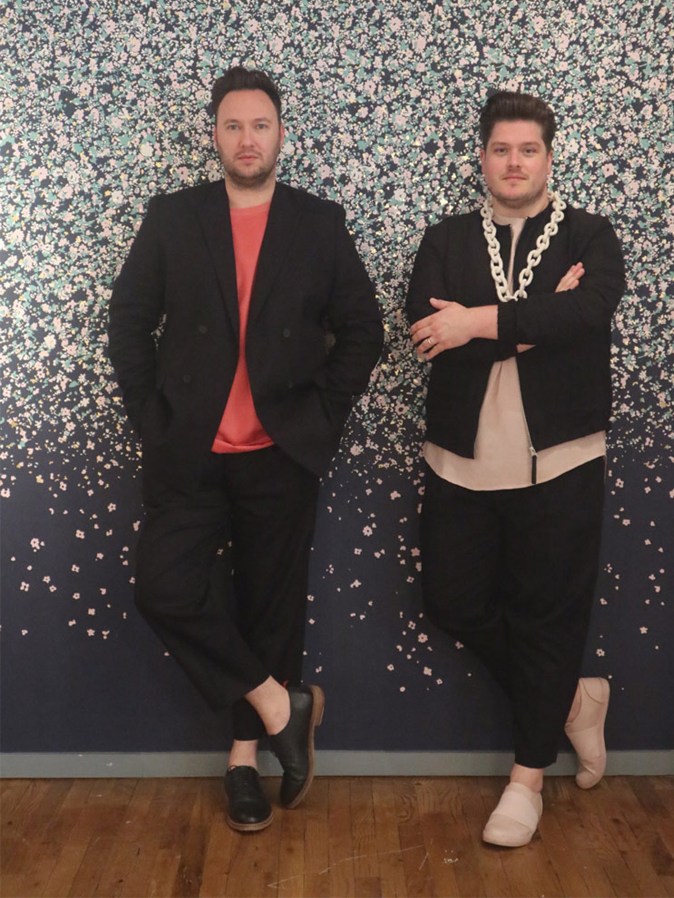

"...we could have stayed for hours with a cocktail in hand, giving her a french plait"
The Future Perfect 'word of mouth space' by De La Espada and Karl Zahn
The Future Perfect 'word of mouth space' by De La Espada and Karl Zahn
1. The Future Perfect
A gallery space that set the tone for our New York experience. Making design feel more like art. The main space was given to an installation by Rooms. All sculptural metallics with a series of hot tables and chairs that felt very iconic.
The rest of the gallery space showed the stunning glass sculptures of John Hogan. So beautiful. Is it art or design? We don’t need an answer, we just want it in our lives.
Not ones to let you leave without something extra, we are then taken to the Future Perfect secret ‘word of mouth’ space by De La Espada and Karl Zahn. Ad it certainly had word spreading fast with its surrealist take on glamour. Loving the the blond hair pillow. We could have stayed for hours with a cocktail in hand giving her a french plait.
Rooms at the future perfect (photo by 2LG)
Rooms at the future perfect (photo by 2LG)
2. Sight Unseen Offsite
The Social media giants were top of our itinerary and their show was a stunner. Their aesthetic is so strongly curated and we love their approach to colour.
Stand outs were Calico Wallpaper, giving us perfect shades of blue and an installation that reacted to human touch with birdsong. Bold ceramic planters by Bzippy, giving us joy. Grain design put on a beautiful display again with dreamy blue room dividers. And we were loving this backdrop and seating by Wallpaper projects x Twns Studio. Major Impact.
Sight Unseen Offsite - Wallpaper projects and twns studio
Sight Unseen Offsite - Wallpaper projects and twns studio
The ‘Sight Unseen Selects’ Area was also gorgeous. In particular a blue jesmonite vase by Spadone Home caught our eye.
Jesmonite vase by Spadone Home at Sight Unseen Selects
Jesmonite vase by Spadone Home at Sight Unseen Selects
Ceramic planters by Bzippy at Sight Unseen Offsite
Ceramic planters by Bzippy at Sight Unseen Offsite
3. R & Company
In the city where dollars supposedly line the pavements, R & Company had made the dream a reality with a rug made of actual dollar bills for their ‘Our Flag Show’.
R&Company 'Our Flag Show'
R&Company 'Our Flag Show'
We also loved pieces by our ongoing design crush team, the Haas Brothers, who first caught our attention a couple of years back on instagram.
But the star piece was this polished aluminuim sand cast table by Chris Wolston.
tabel by Chris Wolston at R&Company
tabel by Chris Wolston at R&Company
4. Lindsey Adelman - Afterglow
Wow factor lighting. We had seen Adelman’s stunning work in Milan at Nilufar Gallery the year before, but the scale of the pieces on show in her NY space was immense. Not for everyone’s home (or budget for that matter) but they are stunningly crafted pieces of interior jewellery.
Lindsey Adelman
Lindsey Adelman
5. ICFF at the Javitts Centre
This is the main show during the New York design festival and it did not disappoint. It had a less curated feel than we were expecting but that didn’t stop it from having some total gems.
Lim & Lu – this design duo took us by surprise with a welcome dose of colour. Loving their vibes with stunning ceramics and patterned rugs in collaboration with Taipei Carpets.
SCP also killed it with a more decorative offering that we have come to expect from the east London based design store
Lim & Lu at ICFF
Lim & Lu at ICFF
New ‘Bulk’ lights by the lovely Dan Schofield for Decode, caught our eye in some great metal finishes. The bronze was our fav. Very Barbican.
Bulk lights by Dan Schofield for Decode (photo by 2LG)
Bulk lights by Dan Schofield for Decode (photo by 2LG)
6. Pelle Design
Having specified their lights in our office design project from last year with West Elm, we simply had to pop over and see the team at Pelle. They were so welcoming, drying us off from the torrential rain storm we got stuck in and giving us a cup of coffee in some stunning hand-crafted ceramics by Helen Levi (a designer who was also showing on the lower east side). It was a much needed moment of calm and friendliness. Their showroom/office/workshop (it seems this is a thing in NYC – to have all aspects of the business in one space) was just beautiful. SO many stunning things and a general aesthetic that is so desirable.
Pelle Design (photo by 2LG)
Pelle Design (photo by 2LG)
7. Roll and Hill
More lighting as we begin to get the feeling that NYC is on its way to becoming the home of all that’s hot in the lighting world at the moment. We met the team at Roll & Hill on their cocktail party night. You may remember that we used their ‘Major’ light in our Brockley project last year and we’ve long been in love with this brand, so it was great to meet them in person.
We particularly love their new collab with Ladies and Gentleman. Definitely aspirational pieces, but worth making space in an interior budget for a star piece by this team.
Roll and Hill
Roll and Hill
Major Light by Roll & Hill in our Brockley project (photo by Megan Taylor)
Major Light by Roll & Hill in our Brockley project (photo by Megan Taylor)
8. Dezeen Block Party on Howard Street
Our first ever block party, this was such a fun event and felt truly New York. With Howard Street home to not only Tom Dixon, but also the incredible BDDW and our major interior crush, Oliver Gustav, this was a night to remember.
Tom DIxon - Dezeen Block party (photo by 2LG)
Tom DIxon - Dezeen Block party (photo by 2LG)
Dezeen Block Party on Howard Street
Dezeen Block Party on Howard Street
Studio Oliver Gustav showroom on Howard Street (photo by 2LG)
Studio Oliver Gustav showroom on Howard Street (photo by 2LG)
9. Soho Design District
The main event (as far as we are concerned at least) was our installation of wallpaper and bespoke upholstery for Ligne Roset. We were invited to show our Forest Hill Collection (designed in collaboration with Custhom) at the Soho store of Ligne Roset. It was pretty crazy and we loved every minute.
So thrilled to be in the company of the likes of Lee Broom for our first showing on the New York scene.
2LG Forest Hill Collection at Ligne Roset for Soho Design District

2LG Forest Hill Collection at Ligne Roset for Soho Design District
2LG x Custhom x Ligne Roset at NYCxDesign
2LG x Custhom x Ligne Roset at NYCxDesign
10. Matter Store
They grabbed our attention earlier this year in Milan and we simply had to pop over and see them while we were on their turf. We weren’t disappointed. They collaborate with our fav designers, like Faye Toogood, and their store exudes style.
‘Rest Stop’ at Canal Street Market is a triumph. Great to see the ‘Molo’ chair by Philippe Malouin for brit brand, Established & Sons, given pride of place.
Rest Stop at Canal Street Market
Rest Stop at Canal Street Market
Here’s to the next time, NYC. We loved sharing it with you. x


 Steven Haulenbeek – Interview
Steven Haulenbeek – Interview